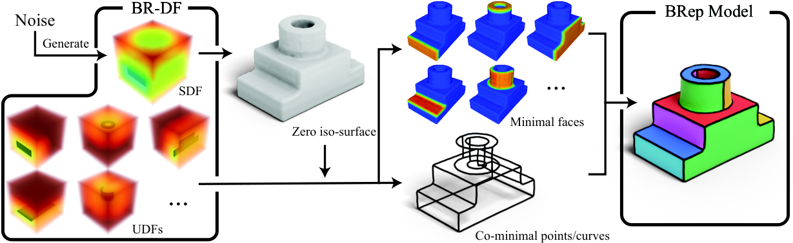
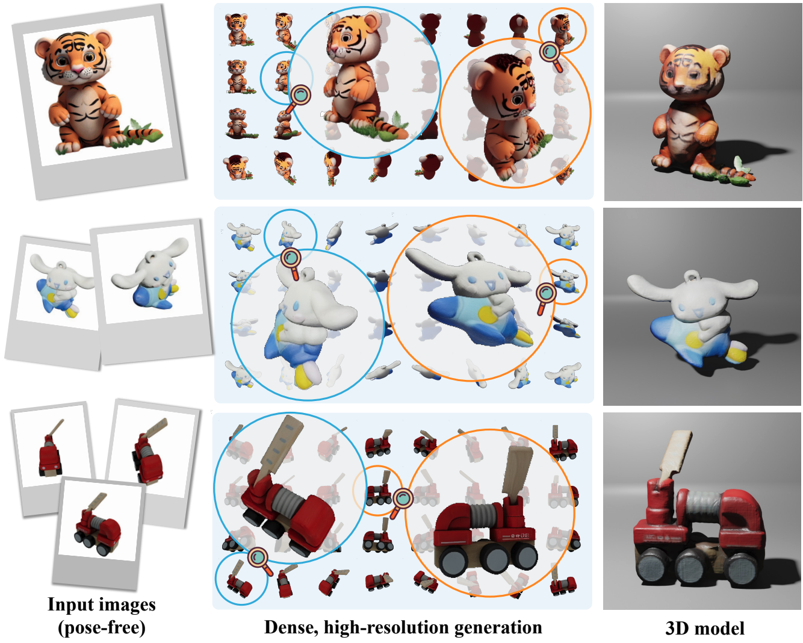
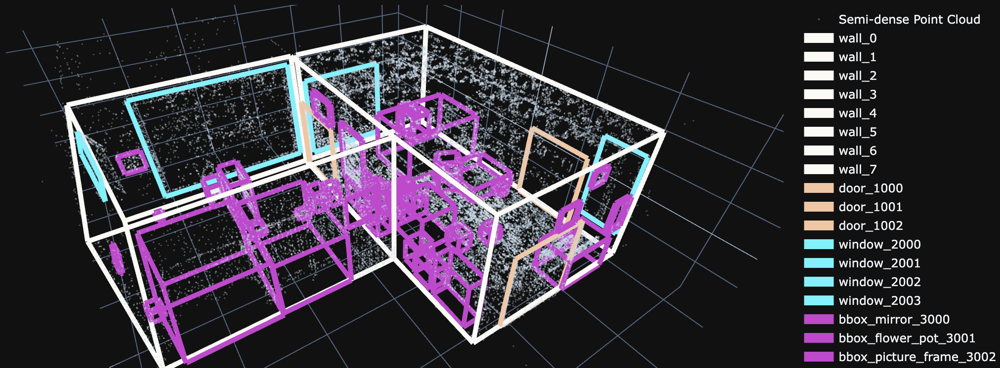
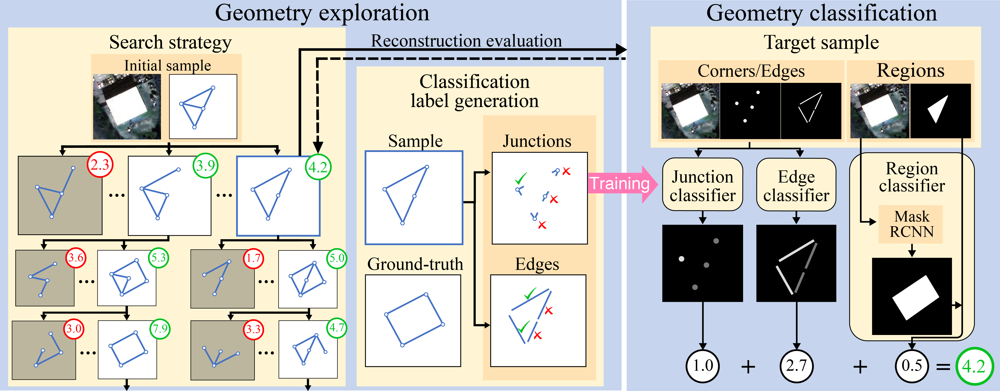
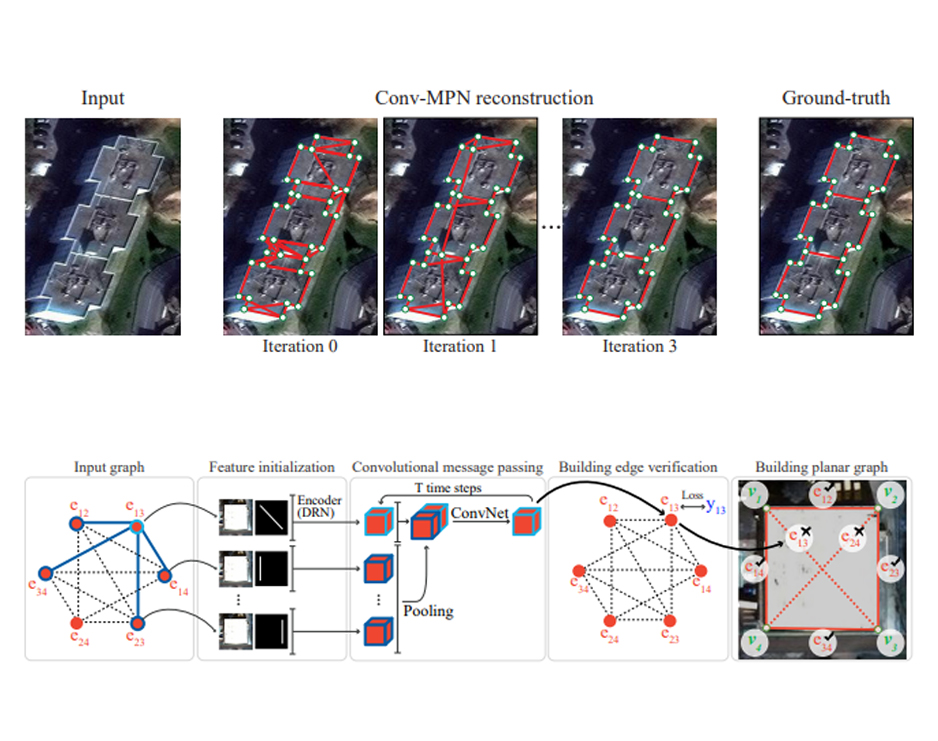

B-Rep Distance Functions (BR-DF): How to Represent a B-Rep Model by Volumetric Distance Functions?
arXiv 2025
fuyangz (at) sfu (dot) ca
fuyang.zhang97 (at) gmail (dot) com
I am a PhD student in Computing Science at Simon Fraser University, under the supervision of Prof. Yasutaka Furukawa. I received my bachelor degree from Beihang University.

arXiv 2025

NeurIPS 2025 (spotlight)

ECCV 2024

ECCV 2024

NeurIPS 2023 (spotlight)

ICCV 2021 Poster

CVPR 2020 Poster